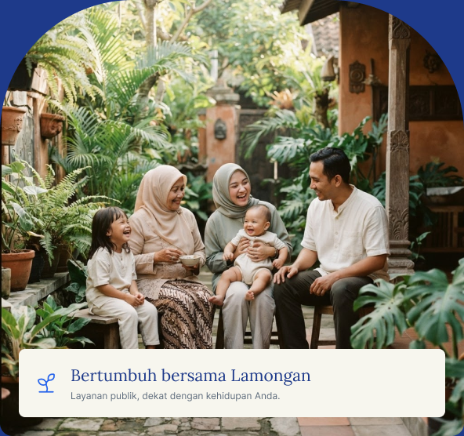

Akses layanan kesehatan
Informasi layanan rumah sakit daerah.
Satu pintu, beragam kebutuhan
Temukan layanan Kabupaten Lamongan dalam satu pintu. Dari menyambut kelahiran, menata masa depan, hingga mendampingi keluarga di masa tua kehidupan.

Bertumbuh bersama Lamongan
Layanan publik, dekat dengan kehidupan Anda.
Layanan sepanjang kehidupan
Mulai dari tahap yang dekat dengan Anda. Temukan layanan dan program perangkat daerah yang relevan untuk diri sendiri maupun keluarga.
Menyambut awal kehidupan.
Membuka ruang untuk tumbuh dan belajar.
Menata pekerjaan, mengembangkan usaha.
Membangun keluarga, saling melindungi.
Menjaga kesehatan dan kesejahteraan.
Pendampingan administrasi di masa kehilangan.
KAMAR 2.1 merupakan layanan lokal Kelurahan Tlogolanyar, bukan layanan pemakaman seluruh kabupaten.
Dekat dengan kesehatan
Kesehatan, air bersih, dan kebutuhan rumah tangga.
Informasi layanan rumah sakit daerah.
Temukan layanan anda
Seluruh 31 entri utama pada portal Rumah Layanan, dikelompokkan agar mudah ditemukan. Pilih layanan untuk mengenal kanal atau instansi penyelenggara.
Kanal layanan dapat berupa situs instansi, aplikasi, atau WhatsApp. Layanan Administrasi Desa ditampilkan sebagai rujukan informasi portal.
Panduan singkat
Gunakan pencarian, perjalanan hidup, atau kelompok pada direktori.
Kenali perangkat daerah dan akses situs, aplikasi, atau kontak resmi.
Baca persyaratan dan alur layanan terbaru dari instansi terkait.
Suara anda berarti
Pengaduan & JEJAK aspiration masyarakat
Sampaikan pengaduan atau aspirasi terkait layanan Kabupaten Lamongan melalui kanal WhatsApp yang tercantum di portal.
WhatsApp LAPOR PAK YES!
0811-3021-708
Perlindungan perempuan & anak
Sistem Pengaduan Online Kekerasan terhadap Perempuan dan Anak. Akses kanal khusus untuk menyampaikan pengaduan.
WhatsApp 0812-7677-0778 Akses SPIKER PERAKSampaikan informasi seperlunya dan ikuti petunjuk pada kanal resmi.
Terbuka untuk warga
Kenali informasi publik, temukan kontak penting, dan berikan masukan tentang layanan.
Sumber informasi: lamongankab.go.id dan situs resmi perangkat daerah. Persyaratan dan ketersediaan layanan mengikuti informasi instansi terkait.